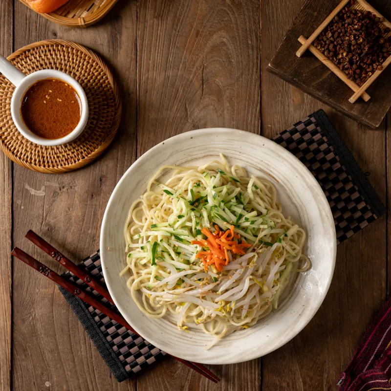
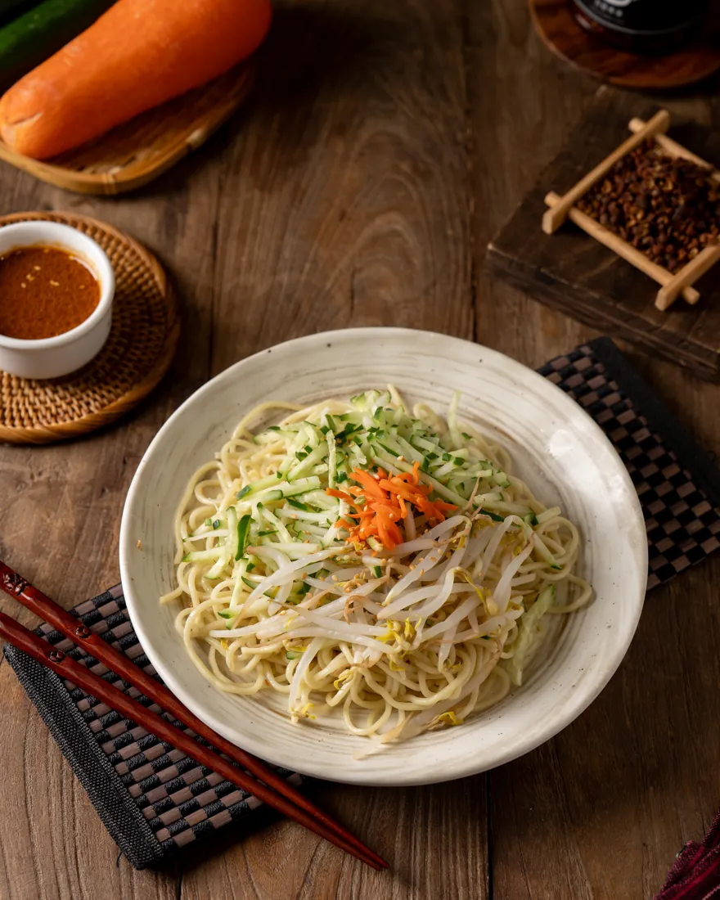

傳統麻醬
Sesame林家招牌。最推雞肉涼麵，或三種配料一次加滿的三合一。

林家的第一道菜，也是點最多的一道。麻醬是阿珍自己調的比例，不用現成醬；淋在每天早上新鮮送到、當天現煮的麵上，配小黃瓜絲、紅蘿蔔絲，拌開就是很多高雄人從小吃到大的味道。
自家調配麻醬 ／ 麵條當天現煮 ／ 可升級味噌加蛋套餐
四種醬，先選醬，再選配料。

林家招牌。最推雞肉涼麵，或三種配料一次加滿的三合一。
花椒香麻，微微辣。醬是素的，吃素的朋友也能點。
日式醬油風味，配玉米、海苔絲，夏天很對味。
配小黃瓜、紅蘿蔔和花生粒，四種醬裡最清爽的一個。
天冷的時候，林家一樣有麵吃。麵條可以選寬麵或家常麵條。
民國 88 年夏天，阿珍一個人帶著兩個年紀還小的女兒北上學做涼麵。回到高雄，先在洛陽街開了一年，後來才搬到現在的林森一路 278 號。剛開始生意不好做，她還是堅持麵條當天現煮、不用外面現成的油麵，麻醬也自己調比例，不走方便速成的路。
就這樣一盤一盤做，老客人慢慢多了起來。現在換兩個女兒接手，媽媽的做法沒變，再加上冬天也能吃的熱麵，讓林家一年四季都有剛好的那一碗。
團體大量訂購另享優惠公司行號訂單、家裡聚餐，請撥打電話預訂。